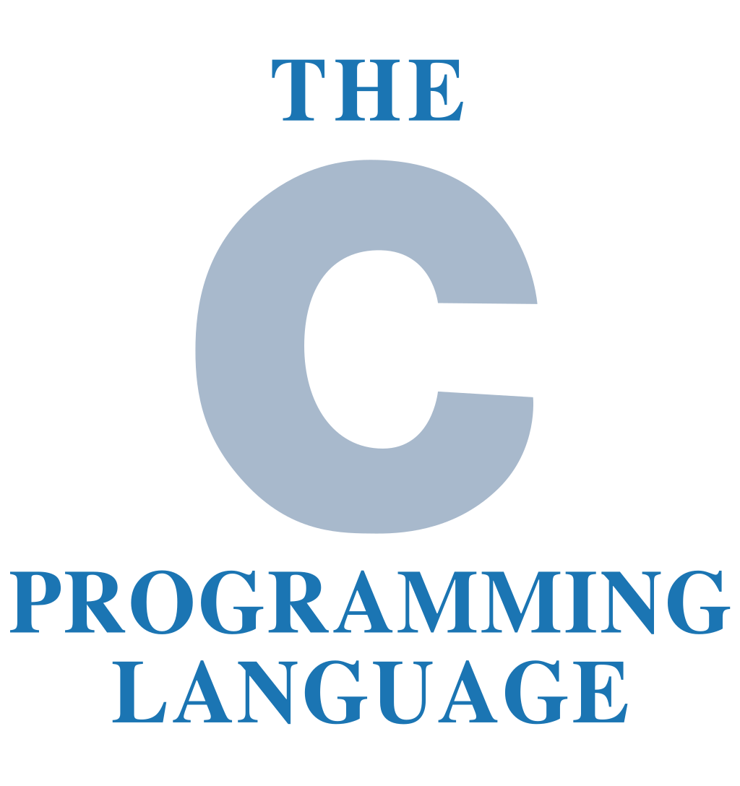

PCMaster
Oto najpopularniejsze języki programowania w roku 2020:
#1 C (16.21%)

Imperatywny, strukturalny język programowania wysokiego poziomu stworzony na początku lat siedemdziesiątych XX w. przez Dennisa Ritchiego do programowania systemów operacyjnych i innych zadań niskiego poziomu.
#2 Python (12.12%)

Język programowania wysokiego poziomu ogólnego przeznaczenia, o rozbudowanym pakiecie bibliotek standardowych, którego ideą przewodnią jest czytelność i klarowność kodu źródłowego. Jego składnia cechuje się przejrzystością i zwięzłością.
#3 Java (11.68%)

Współbieżny, oparty na klasach, obiektowy język programowania ogólnego zastosowania. Został stworzony przez grupę roboczą pod kierunkiem Jamesa Goslinga z firmy Sun Microsystems. Java jest językiem tworzenia programów źródłowych kompilowanych do kodu bajtowego, czyli postaci wykonywanej przez maszynę wirtualną. Język cechuje się silnym typowaniem. Jego podstawowe koncepcje zostały przejęte z języka Smalltalk (maszyna wirtualna, zarządzanie pamięcią) oraz z języka C++ (duża część składni i słów kluczowych).
#4 C++ (7.6%)

Umożliwia abstrakcję danych oraz stosowanie kilku paradygmatów programowania: proceduralnego, obiektowego i generycznego. Charakteryzuje się wysoką wydajnością kodu wynikowego, bezpośrednim dostępem do zasobów sprzętowych i funkcji systemowych, łatwością tworzenia i korzystania z bibliotek (napisanych w C++, C lub innych językach), niezależnością od konkretnej platformy sprzętowej lub systemowej (co gwarantuje wysoką przenośność kodów źródłowych) oraz niewielkim środowiskiem uruchomieniowym. Podstawowym obszarem jego zastosowań są aplikacje i systemy operacyjne.
#5 C# (4.67%)

Wieloparadygmatowy język programowania zaprojektowany w latach 1998-2001 przez zespół pod kierunkiem Andersa Hejlsberga dla firmy Microsoft. Program napisany w tym języku kompilowany jest do języka Common Intermediate Language (CIL), specjalnego kodu pośredniego wykonywanego w środowisku uruchomieniowym takim jak .NET Framework, .NET Core, Mono lub DotGNU. Wykonanie skompilowanego programu przez system operacyjny bez takiego środowiska nie jest możliwe.